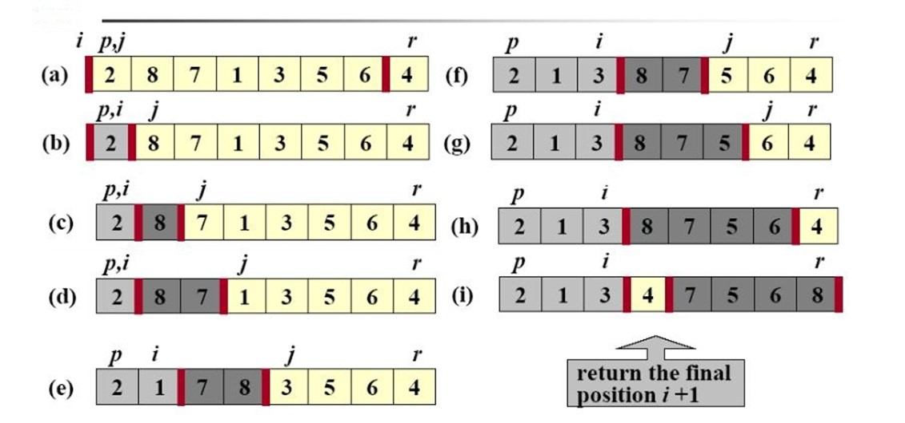

快速排序
目录
快速排序
快速排序是一种最坏情况时间复杂度为Θ(n\^2)的排序算法。虽然最坏情况的时间复杂度很差，但是快速排序通常是实际排序应用中最好的选择，因为它的平均性能非常好：它的期望时间复杂度是Θ(nlgn)，而且Θ(nlgn)中隐含的常数因子非常小。另外，它还能进行原址排序。
它与归并排序一样，快速排序也使用了分治思想：
分解：将数组 A[p..r]划分为两个子数组 A[p..q-1]和 A[q+1..r]，使得两个子数组中的每一个元素都小于等于 A[q]。其中计算下表也是划分过程的一部分。
解决：通过递归调用快速排序，对子数组 A[p..q-1]和 A[q+1..r]进行排序。
合并：因为子数组都是原址排序，所以不需要合并操作。
算法的关键是划分过程。partition 过程总是选择一个 x=A[r]作为主元（pivot element），并围绕它来划分子数组 A[p..r]。最终子数组被分成大于主元的一部分和小于主元的一部分，然后主元被交换到这两个部分的中间。

图1 partition
C 语言快速排序实现：
#include <stdlib.h> #define exchange(a, b) {(a) = (a) + (b); (b) = (a) - (b); (a) = (a) - (b);} //exchange(a, b)不适用于同一个变量交换自己，交换结果会发生错误，值变为0。所以这回不使用这个宏。 int partition(int *A, int p, int r) { /* * 选择一个x=A[r]作为主元，并围绕它来划分子数组A[p..r]。 * 最终分成小于等于主元的两个数组，A[p..i-1]和A[i+1..r]。 */ int x, i, j; int temp; x = A[r]; i = p - 1; for (j = p; j < r; j++) { if (A[j] <= x) { i = i + 1; //exchange(A[i], A[j]); temp = A[j]; A[j] = A[i]; A[i] = temp; } } //exchange(A[i + 1], A[r]); temp = A[r]; A[r] = A[i + 1]; A[i + 1] = temp; return(i + 1); } void quicksort(int *A, int p ,int r) { /* * 递归调用快速排序，对以数组进行排序。 */ int q; if (p < r) { q = partition(A, p, r); quicksort(A, p, q-1); quicksort(A, q+1, r); } }
很多人都选择随机化版本的快速排序作为大数据输入情况下的排序算法。与始终采用 A[r]作为主元的方法不同，随机抽样是从子数组 A[p..r]中随机选择一个元素作为主元。我们将 A[r]与从 A[p..r]中随机选取的一个元素交换。
随机化快速排序的 C 语言实现：
int rand_partition(int *A, int p, int r) { int i, temp; i = p + rand() % (r - p + 1); temp = A[r]; A[r] = A[i]; A[i] = temp; return(partition(A, p, r)); } void rand_quicksort(int *A, int p, int r) { int q; if (p < r) { q = rand_partition(A, p, r); rand_quicksort(A, p, q - 1); rand_quicksort(A, q + 1, r); } }